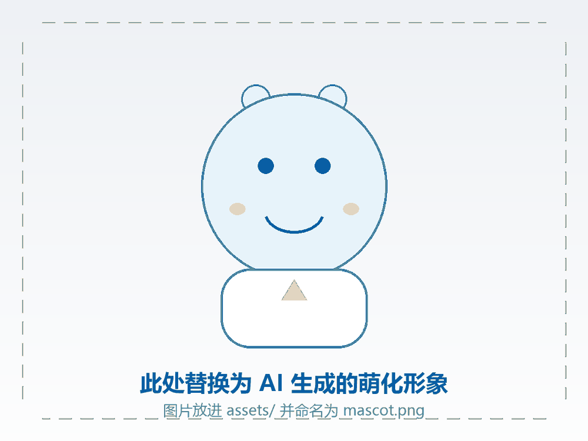
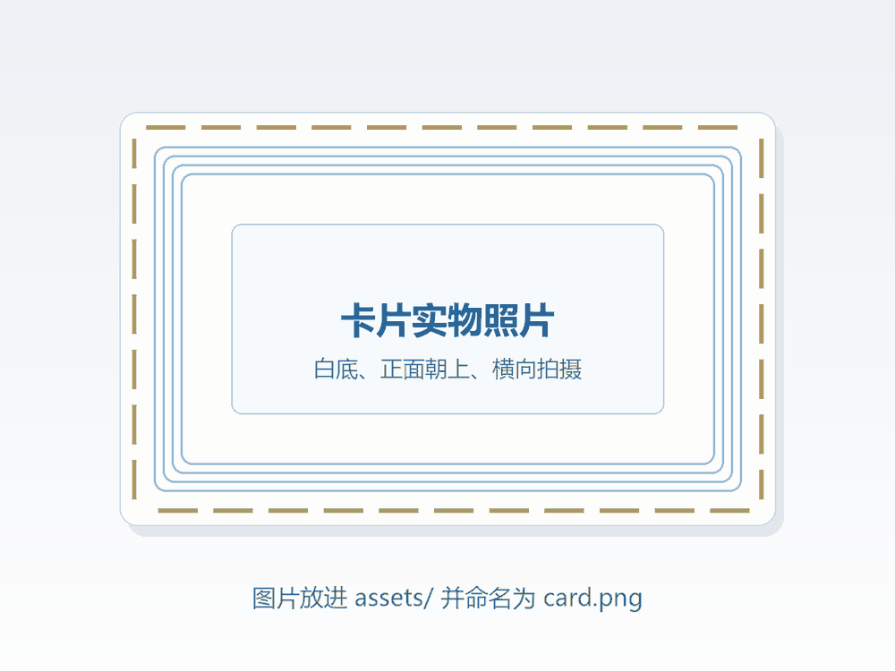

语音合成
把文字变成自然、有情感的声音。你手机里念出这段介绍的声音，就属于同一类技术。
NFC 文创卡 · 碰一下，听见 AI 的声音
您正在通过一张实体卡片访问本页面。
它没有电池，只靠手机的电磁场被唤醒。
由实体卡片唤醒 · 碰一碰或扫码均可
把科大讯飞的品牌基因，做成一个能被记住的角色。


这两格目前是占位图。把图片放进 assets/ 目录，分别命名为 mascot.png（AI 生成的萌化形象）和 card.png（卡片实物照片）即可自动替换。单张建议压缩到 300 KB 以内、宽度 1200 px 左右，手机打开会更快。
让机器能听会说，能理解会思考。
科大讯飞股份有限公司成立于 1999 年，总部位于安徽合肥，是长期深耕智能语音与人工智能方向的上市企业。二十多年里，它的技术重心一直落在一件事上：让机器不仅能"听"到声音，也能"听懂"内容，并且用自然的方式回应人。
围绕语音合成、语音识别、自然语言理解、机器认知等核心技术，这些能力被带进了课堂、医院、汽车和城市治理等真实场景。2023 年发布的讯飞星火认知大模型，进一步把"理解与生成"的能力接进了教育与产业。
把文字变成自然、有情感的声音。你手机里念出这段介绍的声音，就属于同一类技术。
让机器在嘈杂环境里也听得清、听得懂，包括方言与口音。
不只是"接话"，而是理解、推理与生成，能写、能答、能当学习伙伴。
技术真正的考场不在实验室，而在课堂、在医院、在每一个具体岗位上。
「X+AI 文创共创计划」要做的，不是一次单纯的设计比赛。它把设计专业同学的创意表达，和计算机、人工智能、物联网专业同学的技术实现放在同一张桌子上，让作品从"好看"走到"能落地"。
我们的选择是：不把产教融合写成一段文案，而是把它做成一张能被"触碰"的实体卡。卡片是设计的载体，NFC 是技术的入口，扫描之后打开的页面，是这段校企协同叙事的正文。
学生共创 → 院校协同 → 企业评审 → 供应链转化
页面内置了一段浏览器语音合成，用来演示"文字变声音"这件事。它跑在你的手机本地，所以离线也能用。
说明：这里用的是浏览器内置语音，音色有限。比赛演示升级版可以接入科大讯飞在线语音合成 API，换成更自然、更有情感的音色——同一段文字，效果会完全不同。
这三条链接是外链，需要联网。本页其余部分在局域网内即可完整浏览。